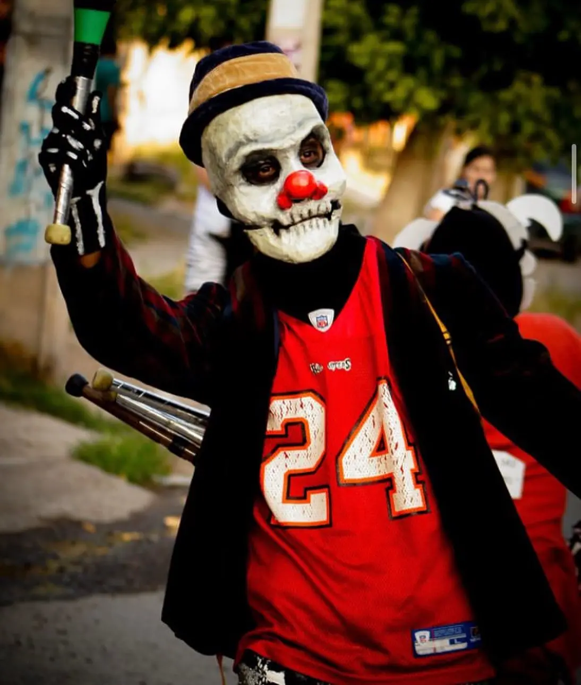
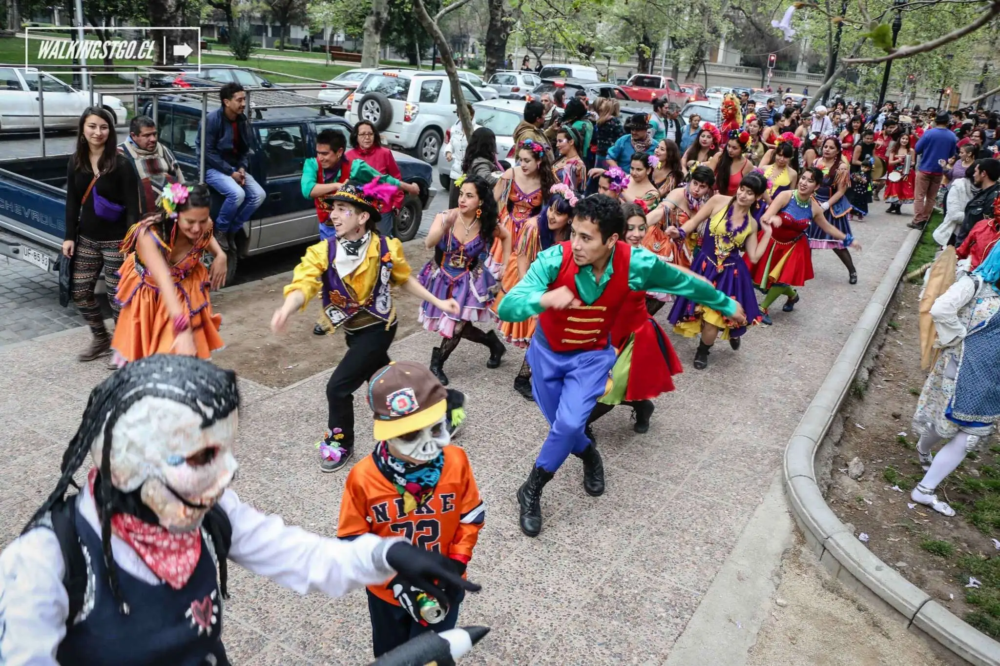

MEMORIA POPULARTodo comienza en la calle
Relatos sobre comparsas, barrios y encuentros que mantienen viva la memoria carnavalera.
Leer másRelatos, memorias y registros del carnaval popular

MEMORIA POPULARRelatos sobre comparsas, barrios y encuentros que mantienen viva la memoria carnavalera.
Leer más
CULTURA POPULAR